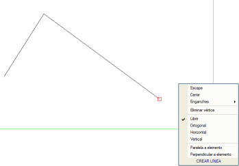
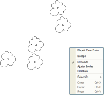
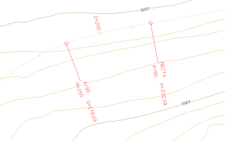
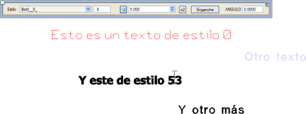
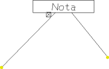

| |
|
TEMEL OBJELER
|
ISTRAM®/ISPOL®'ün haritacılık CAD modülü temel olarak dört tür obje ile çalışır: Çizgiler veya Çoklu Doğrular Her çizgi, düz segmentlerle veya kübik parabollerle (yumuşatılmış çizgiler) enterpole edilmiş eğrilerle birbirine bağlanan bir dizi köşe noktasından oluşur. Çizgiler haritada basit, çift vb. çizgilerle ve/veya sembol dizileriyle (sembollerle süslenmiş çizgiler durumunda) temsil edilebilir. Bir çizgiyi oluşturan köşe noktalarının (ve varsa sembollerin) her biri, üç uzaysal X,Y,Z koordinatıyla tanımlanır. Bu elemanların birleşimi, haritada özel bir anlama sahip süslü çizgiler oluşturur. Bu alt bölümde, çizgi kütüphanesinden bir elemanın oluşturulması ayrıntılı olarak açıklanmaktadır. Bir çizgi çizme Ekranda bir çizgi oluşturmak için, ana menüden Çiz alt menüsünü açmak ve Çizgi Oluştur'u seçmek (veya çizgiler araç çubuğundaki  simgesine tıklamak) yeterlidir. simgesine tıklamak) yeterlidir. Hemen ardından, farenin sol tuşuyla çizgiyi oluşturacak ardışık köşe noktaları oluşturulur ve çizgi çalışma alanı üzerinde çizilir. Köşe noktası eklemeyi durdurmak için <Esc> tuşuna basmak veya farenin sağ tuşuna basıldığında açılan bağlam menüsünden Çıkış'ı seçmek yeterlidir. Elbette, her köşe noktasının koordinatlarının girilmesi mevcut yöntemlerden herhangi biriyle yapılabilir. 8D Çizgiler Bu çizgilerin her köşe noktasında 8 parametre bulunur:
Semboller veya Noktalar Bir sembol veya tekil nokta, düzlemdeki bir noktayla ilişkilendirilmiş, o noktayı veya çevresini nitelemeye yarayan ve bu nitelemenin görsel olarak tanınmasını sağlayan şematik bir grafiktir. Geometrik tanımı, farklı renklerde, boyutlarda vb. birleştirilmiş çizgiler, diğer semboller ve yazılar içerebilir ve karmaşıklığı bir kaligrafi noktasından, bir pafta anteti, bir amblem veya arma kadar eksiksiz bir şeye kadar değişebilir. Bir sembol, geometriye ek olarak, bir ekleme noktası, üç uzay koordinatı (ekleme noktasına göre) ve bir öznitelik ile ilişkilidir. Öznitelik, metinsel sembollerin etiketlemek için kullanabileceği ek bir veridir. Örneğin, bir KM etiketi, öznitelik olarak KM değerini taşıyacaktır. Otomatik ölçeklenen olarak adlandırılan ve boyutu kotuna bağlı olan bir sembol türü vardır. Böylece, kotu 1 olan otomatik ölçeklenen bir sembol orijinal boyutunda olacak, kotu 2 ise bu boyutun iki katı olacak ve kotu 0 ise görünmez olacaktır. Bu tür semboller, enkesitlerin gösteriminde çok kullanışlıdır, çünkü kullanıcının müdahalesine gerek kalmadan enkesitin ölçeğine otomatik olarak uyum sağlarlar. Aslında, programın enkesitlerde kullanılmak üzere kullandığı tüm semboller otomatik ölçeklenir. Yukarıdakileri göz önünde bulundurarak, kullanıcıya her sembolün boyutunun dört katsayıdan etkilendiğini açıklamakta fayda var:
Bir sembol çizme Ekranda bir sembol oluşturmak için, ana menüden Çiz alt menüsünü açmak ve Sembol Oluştur'u seçmek (veya semboller araç çubuğundaki  simgesine tıklamak) yeterlidir. simgesine tıklamak) yeterlidir. Hemen ardından, farenin sol tuşuyla eklenecek ardışık semboller oluşturulur ve bunlar çalışma alanı üzerinde çizilir. Nokta eklemeyi durdurmak için <Esc> tuşuna basmak veya farenin sağ tuşuna basıldığında açılan bağlam menüsünden Çıkış'ı seçmek yeterlidir. Elbette, her noktanın koordinatlarının girilmesi mevcut yöntemlerden herhangi biriyle yapılabilir. Etiketler veya metinsel semboller Tekil noktalar grubuna ait olmalarına rağmen, etiketler özel bir anılmayı hak eder. Tekil nokta sembolleriyle her açıdan aynıdırlar, ancak gösterimleri sırasında özniteliklerini (kot, KM, vb.) etiketlerler. Eş yükselti eğrisi kot etiketleri, kilometre noktası etiketleri vb. bu gruba aittir. Yazılar veya etiketlerle karıştırılmamalıdır. Yazılar veya Etiketler Bir yazı veya etiket, bir noktayla ilişkilendirilmiş bir kelime veya kelime grubundan oluşan alfanümerik bir metin satırıdır. Pafta üzerine serbestçe yazılmış metinlere karşılık gelirler. Bir nehir adı veya bir topografik nirengi adı örnek olarak verilebilir. Aynı şekilde tiplere göre sınıflandırılırlar. Bir etiketi tanımlayan özellikler şunlardır:
Bir yazı çizme Ekranda bir yazı oluşturmak için, ana menüden Çiz alt menüsünü açmak ve Yazı Oluştur'u seçmek (veya yazılar araç çubuğundaki  simgesine tıklamak) yeterlidir. simgesine tıklamak) yeterlidir. Hemen ardından, yazı stilini, boyutunu, ekleme noktasını (tutma noktası) ve açısını belirtebileceğiniz bir yüzer menü açılır. Farenin sol tuşuna yazının ekleneceği yere tıklanır ve etiket yazılır. Yazıyı onaylamak için <Enter> tuşuna veya mesajlar alanındaki [TAMAM] düğmesine basılır. Yazının ekleme noktasının koordinatlarının girilmesi mevcut yöntemlerden herhangi biriyle yapılabilir. Hücreler Hücreler, sembollere çok benzer, temel farklar şunlardır:
Bir hücre çizme Ekranda bir hücre oluşturmak için, ana menüden Çiz alt menüsünü açmak ve Hücre Oluştur'u seçmek (veya hücreler araç çubuğundaki  simgesine tıklamak) yeterlidir. simgesine tıklamak) yeterlidir. Hücre objesi çok dinamiktir, bu da seçilen hücre tipine göre farklı davranışlar sergilemesini sağlar. Örnekte, 4. tip bir hücrenin eklenmesi gösterilmektedir. Bu tip seçildikten ve Hücre Oluştur seçeneğine tıklandıktan sonra, program hücrenin ekleme noktasını ve ardından iki ilişkili noktanın koordinatlarını ister. Hücre eklemeyi durdurmak için <Esc> tuşuna basmak veya farenin sağ tuşuna basıldığında açılan bağlam menüsünden Çıkış'ı seçmek yeterlidir. Elbette, her ekleme noktasının koordinatlarının girilmesi mevcut yöntemlerden herhangi biriyle yapılabilir. |